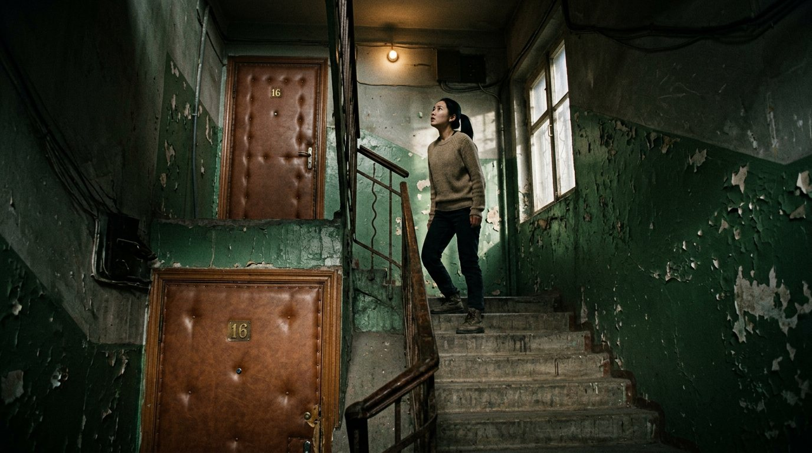

Синопсис
Томирис, только что ставшая главой SMM-отдела, уверена, что за ней следят. Сестра смеётся, полиция отмахивается. Тогда она начинает снимать каждый свой день: телефон, потом четыре камеры в квартире.
Камень в окно, конфеты с запиской «Томпи», пропавшее бельё, чужой ужин на её кухне. Прозвище знал только бывший, Арман. Томирис выкладывает рилс «Оставь меня в покое», он улетает в миллионы просмотров, Арман прижимает её к стене во дворе — и через несколько дней погибает. Месяц тишины. Томирис записывает «последнее видео на эту тему».
Потом на запотевшем зеркале проступает «ВСЕГДА РЯДОМ». Номер, с которого пишет сталкер, оформлен на неё саму. Доставщик воды из её офиса — человек, которого коллеги никогда не видели. Квартира над ней носит тот же номер шестнадцать, и в ней стена из сотен её фотографий.
Сталкер знает её расписание лучше, чем она. В финале Томирис дерётся за жизнь тем, что он сам ей подбросил: кувшином воды, в которую подмешивал снотворное, и камерой, которой она всё доказывала. Спасает её сестра — тот самый человек, что смеялся первой. Последняя сцена — Томирис забирает у сестры дубликат ключей. Камеры в квартире она так и не выключает.
